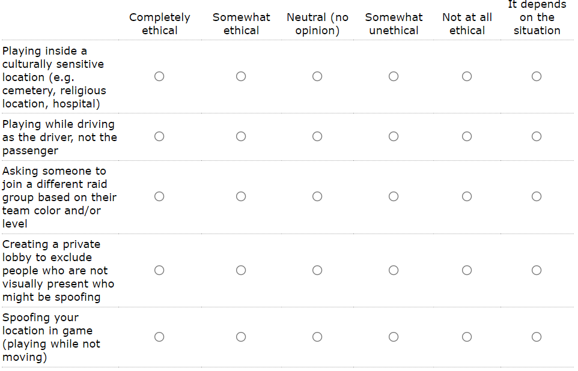
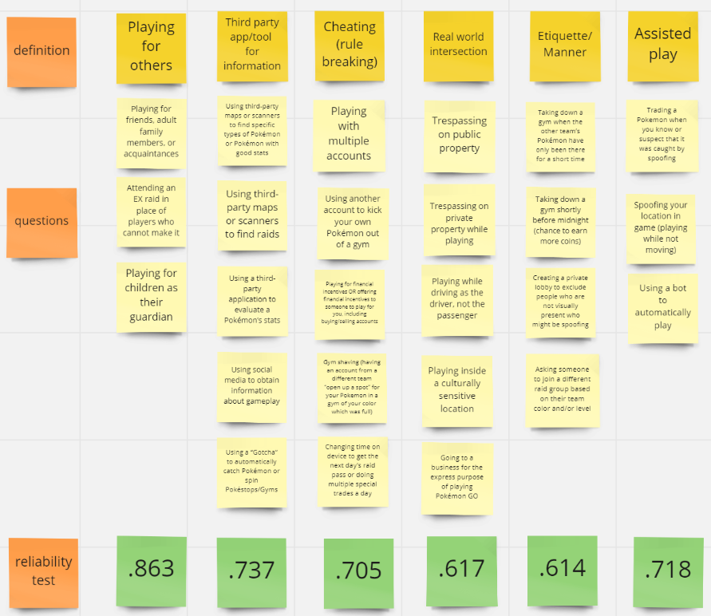

Players of different games have different opinions on which actions are okay, depending on terms of service, how they affect others, or whether they can put the player in danger. For a location-based game like Pokémon Go, which actions do players find the most ethically questionable and which kinds of actions do the players perform the most? Is it trespassing, playing in culturally sensitive locations, spoofing the player's location, or other seemingly normal actions?
Our research questions for this project were:
In this project, we distributed a survey to many Pokémon Go players through platforms like Reddit, Facebook Groups, and Discord Servers. We first started by playing the game and conducting a literature research on topics like competitiveness in games, ethical stances related to age and gender, and past studies on Pokémon Go. After receiving our results, we coded a sample of open ended responses to develop a code book. We used Microsoft Excel to clean the responses and create graphs for multiple choice questions. We then then used IBM SPSS to analyze our results and derive statistically significant results. We are now close to ending the project, one paper has been written while a second one is in progress.
The project first started with a Literature Review, but we also made sure everyone was familiar with the game. I had never played it before, but in the months leading to obtaining our survey results, I began playing. I was able to see actions my team members brought up while I saw other people playing, such as using multiple phones for multi-accounting and organizing players into teams for raid battles. This became really helpful when creating questions for the survey and analyzing the open-ended questions later on.
Before starting the project, we began by reading papers and books related to topics like cheating in video games and sports, ethical stances in situations outside of gaming, and safety concerns with location-based/augmented reality games. Since there has not been a lot of research conducted with augmented-reality or location-based games, especially with ethics, we would have to apply information from different scenarios to our results, such as ethics in the workplace. We also looked at different types of ethics, such as Consequentialism and Deontology.
The survey was created in Catalyst and was broken up into different sections. The first part had to do with game-related demographics and habits, like how many hours they play a week, how much money they've spent on the game, and which team they joined. Here, we also checked for what motivates them to play Pokémon Go and if the importance of the game has changed for them over time, and if so, how.
The next part of the survey asked about which actions the players have performed themselves. Afterward, for every single action, we asked about their opinion on how ethical each action is to them. The options were Completely ethical, Somewhat ethical, Neutral (no opinion), Somewhat unethical, Not at all ethical, and It depends on the situation.

Most actions were decided upon after the members of the team had played the game for at least three months each, some had been playing consistently for a longer amount of time though. Some of the actions were included due to being talked about in the media for being controversial.
The third part of the survey included open-ended questions. The two main questions here were "Of the actions above where you selected the option “It depends,” can you select one or two specific actions and explain what makes it okay in some situations but not in others?" and "Can you pick one of the most ethically problematic issues related to playing Pokémon GO and tell us more about your thoughts or reasoning? If you are having trouble deciding, it could help to think about a first-hand experience." We also asked for other ethically questionable actions we didn't include and how their ethical stance differs in other location-based games, like Ingress.
The last section of the survey asked about the participants' demographic information.
The survey remained available for about a month. In total, we had about 2200 responses, and 800 responses for the open-ended questions, which weren't mandatory.
Each member of the team took a third of the responses to filter out data based on criteria like too many of the same responses, surveys missing a lot of responses, and responses that were not relevant to demographic or open-ended questions. After cleaning the data, we we still had about 2020 responses.
We then converted multiple-choice responses to numbers. This would allow us to use IBM SPSS to analyze the data easily. Most questions had some type of scale already, like yes-no questions and change of importance. For the ethical stance question results in the first paper, we only included Completely ethical and Somewhat ethical as "ethical thinking" (approval) and Somewhat unethical, Not at all ethical as "unethical thinking." Later on, we included It depends and No Opinion. We decided to make It Depends as a higher ethical thinking option than No Opinion, which gave us a scale of 1-6 including all of the options. It Depends was translated to 4 and No Opinion to 3. The reasoning for this was that saying it depends implies the action could be ethical in some cases, as opposed to being completely neutral.
| Multiple-Choice Response | Number Equivalent |
|---|---|
| Completely unethical | 1 |
| Somewhat unethical | 2 |
| Neutral (no opinion) | 3 |
| It depends on the situation | 4 |
| Somewhat ethical | 5 |
| Completely Ethical | 6 |
We read through three random samples of open-ended questions. Based on those responses, we decided on codes for common themes. We also consulted a Doctor of Philosophy to help us think about what kind of ethical concept each code would fall under. The codebook went through a few iterations. To see the final codebook, see the appendix below. Along with these codes, we also coded each response as In-Game, In Real Life, Both, or Unclear. This affected the descriptions of a few of the main codes. During this process, I also translated some responses from Spanish and Portuguese to English.
52% of players consider themselves free-to-play players, meaning they don't spend money at least in the game. 64% of players play the game at least 7 hours or more a week. 24% of players play 4-6 hours a week.
| Motivation | Count n=2023 | Percentage |
|---|---|---|
| I like collecting Pokemon | 1687 | 83.39% |
| It encourages me to go outside and walk more | 1557 | 76.96% |
| I enjoy playing with friends and family | 1423 | 70.34% |
| I like Pokemon Games and/or the franchise | 1400 | 69.20% |
| I like exploring new areas and discovering interesting physical locations | 1167 | 57.69% |
| It helps me destress | 1059 | 52.35% |
| I like leveling up and/or obtaining badges | 991 | 48.99% |
| I enjoy meeting new people through playing this game | 925 | 45.72% |
| I like battling with pokemon | 726 | 35.89% |
| I like playing new types of games and wanted to try and AR/location-based mobile game | 323 | 15.97% |
| Other | 115 | 5.68% |
The most common motives for playing Pokemon Go were collecting pokemon, being encouraged to go outside more, and playing with friends and family. Battling Pokemon and trying out a new Augmented Reality or location-based game were much less common.
To answer the first question, about which actions users perform the most, we found that 85.12% of players have used social media to obtain game information. The second most common action was using a third-party app to check their Pokémon's Individual Values, or stats. This action had a percentage of 82.06%. Taking down a gym after the Pokemon have only been there a short amount of time was the third most performed action. These actions also had high ethical thinking rates, ranging from 73% to 87.99%. Having a high ethical thinking rate seemed to have a similar performance rate, at least for these three actions.
The least performed actions were using a bot to play automatically and playing for financial incentives, with 1.33% and 1.04%, respectively. Their ethical thinking was very low, at 2.67% and 5.98%.
Some more interesting statistics were that 54.62% of players have played in a culturally sensitive location, like hospitals and graveyards, and 51.66% of players have played while they were driving. Playing while driving has very low ethical thinking however, at 6.18%.
To answer the question about what kind of philosophical stances people take, we chose three types.
| Philosophical Stance | Description |
|---|---|
| Consequentialism | Goodness or badness of outcomes, harm to other players, rules capturing the idea of no harm/no foul, or little harm/little foul, etc. |
| Deontology, or duty-based | Responses that appeal to desert, merit, fair game play, contracts, and the like |
| Virtue Ethics | Responses that note norms of etiquette and characteristics of what it is to play the game with honor |
For actions that are mostly ethical, we learned users believe actions benefiting others are mostly ethical. This includes actions like playing for friends and family and playing for children as their guardian. From the open-ended responses, some people mentioned things like it is okay to play for someone if they are not as good at the game or if they are busy and can't make it to raids or catching rare Pokémon. There wasn't a particular philosophical stance used for these responses though.
Another prominent category of actions considered ethical was actions that may negatively impact others but permissible under the rules of the game. Actions that fall under this category include taking a gym down after the Pokémon have only been there a short time and taking down a gym shortly before midnight (potentially causing a player to lose out on coins if they got all their coins for the day). The reasoning in responses for these actions seemed to be deontological, saying that those actions are allowed as part of the rules of the game and the players affected have likely performed the same actions.
Action categories considered unethical included Actions with negative real-world impact and Actions that manipulate game technologies to gain advantages. The first category included actions like playing while driving, trespassing on private property, and playing for financial incentives. These actions involve a player's safety, breaking laws, and changing a player's financial situation, both for the seller and buyer. All three philosophical stances were used for responses explaining the unethical nature of these actions. Consequentialism was used to describe how driving while playing can harm others and how it is the player's, the driver's, duty to notice their environment. Deontology was used when talking about how playing for financial incentives gets rid of the work and challenge of the player obtaining things on their own. It is their duty to achieve/obtain those things alone, so it gets rid of their merit playing the game.
Actions that manipulate game technologies to gain advantages include spoofing locations, changing a device's time, and using a bot to play automatically. Here, deontology and virtue-ethics were used to explain why the actions are unethical. Some players mentioned actions like spoofing and changing the time on your device get rid of the "spirit" of the game, adventuring and meeting people. This goes against what they believe to be the honorable or just way to play, outside of following the rules/terms of service.
We have been writing a second paper for the results based on age and gender.
We decided to group the actions into categories describing a type of situation. To make sure the groupings were significant, we made sure each group had a regression of at least 0.5, but preferably 0.7. This is some of the brainstorming we did to create the groups.
With these groups, we decided to analyze the responses of males compared to females. We also compared the responses of Gen X, Gen Y, and Gen Z. To display some of the major differences, I made some visualizations for three different questions: Ethical thinking, Motivation for playing the game, and Actions performed. To view them on an Observable/D3 notebook, click here. After many discussions and brainstorming sessions however, we decided to write about motivations and their impact on which actions each group of participants performed, or did not perform, for the discussion in the paper.
The most common stances players took were deontology and consequentialism-based. Some responses mentioned having good character, citing virtue-ethics. Most often, participants mentioned an action as being okay regardless of the consequences (deontology) or being okay as long as it has no negative effects (consequentialist). Player's almost always use one of these stances to explain or defend why they performed a certain action or why the action can be okay. Besides no consequences, other reasoning for doing something include everyone is doing it anyway, they did something to me so I retaliated, the game is to ineffecient, and more.
Niantic has implemented changes to help players and keep them safer. As a location-based game requiring players to move, Niantic has already taken steps to deal with a pandemic. They allowed players to travel to a pokestop or gym from home. This allows them to spin stops for items, battle gyms for coins, and attend raid battles, all important features of the game.
We learned that players do perform certain actions based on whether they align with the goals of the game or not, showing how game designers do have some responsibility with the rules they include in the terms of service and the actions the game can promote, even indirectly. Niantic has taken steps to prevent dangerous/illegal actions like playing while driving. Since players have consequentialist and duty-based stances, actions like trespassing and playing while driving can still occur. In these situations, players think no one will find out so it's okay, or as long as no one gets hurt it is okay. There are many reasons players perform different actions, so it is important for game designers to consider the motivations and stances players take, even if they don't mean to promote certain behaviors or actions.
Another important consideration is the social enviroment the game can create. Outside of the competitive aspects of a game, there is a social environment that affects what players let others know about them and what actions they are willing to perform. A game like Pokemon Go doesn't punish players for cheating, but some players were still worried about looking a cheater, so they usually don't do it. For participants who have "cheated", either by spoofing or using a bot, they are self-aware about how they are creating a fake image for others.
| Ethically Questionable Action | # of people conducted (n=2023) | % of people conducted | # of ethical thinking approval | % of ethical thinking approval | # of unethical thinking | % of unethical thinking |
|---|---|---|---|---|---|---|
| Using social media to obtain information | 1722 | 85.12% | 1780 | 87.99% | 65 | 3.21% |
| Using a third-party app to evaluate a Pokémon | 1660 | 82.06% | 1729 | 85.47% | 69 | 3.41% |
| Taking down a gym of other team's Pokémon after a short time | 1489 | 73.60% | 1331 | 65.79% | 294 | 14.53% |
| Playing for friends, family, or acquaintances | 1152 | 56.95% | 1121 | 55.41% | 365 | 18.04% |
| Playing inside a culturally sensitive location | 1105 | 54.62% | 534 | 26.40% | 583 | 28.82% |
| Going to a business for playing Pokémon GO | 1056 | 52.20% | 1087 | 53.73% | 187 | 9.24% |
| Playing while driving as the driver, not the passenger | 1045 | 51.66% | 125 | 6.18% | 1558 | 77.01% |
| Using third-party maps or scanner to find Pokémon | 1038 | 51.31% | 866 | 42.81% | 671 | 33.17% |
| Using third-party maps or scanners to find raids | 981 | 48.49% | 1233 | 60.95% | 348 | 17.20% |
| Creating a private lobby to exclude spoofing people | 901 | 44.54% | 1492 | 73.75% | 156 | 7.71% |
| Taking down a gym shortly before midnight | 844 | 41.72% | 1259 | 62.23% | 301 | 14.88% |
| Playing with multiple accounts | 785 | 38.80% | 677 | 33.47% | 761 | 37.62% |
| Attending an EX raid in place of players who cannot make it | 776 | 38.36% | 1357 | 67.08% | 260 | 12.85% |
| Using a "Gotcha" | 625 | 30.89% | 1208 | 59.71% | 359 | 17.75% |
| Trespassing on public property | 585 | 28.92% | 296 | 14.63% | 1230 | 60.80% |
| Asking someone to join a different raid group | 527 | 26.05% | 744 | 36.78% | 416 | 20.56% |
| Using another account to kick your own Pokémon out of a gym | 366 | 18.09% | 553 | 27.34% | 1012 | 50.02% |
| Playing for children as their guardian | 3198 | 15.76% | 1420 | 70.19% | 172 | 8.50% |
| Trading a Pokémon when you suspect it was caught by spoofing | 314 | 15.52% | 224 | 11.07% | 1202 | 59.42% |
| Changing time on device to get the next day's raid pass | 294 | 14.53% | 309 | 15.27% | 1274 | 62.98% |
| Gym shaving | 259 | 12.80% | 223 | 11.02% | 1491 | 73.70% |
| Trespassing on private property while playing | 223 | 11.02% | 60 | 2.97% | 1714 | 84.73% |
| Spoofing your location in game | 180 | 8.90% | 75 | 3.71% | 1703 | 84.18% |
| Using a bot to automatically play | 27 | 1.33% | 54 | 2.67% | 1423 | 70.34% |
| Playing for financial incentives | 21 | 1.04% | 121 | 5.98% | 1654 | 81.76% |
| Code | Description | Example |
|---|---|---|
| Impact to others (Benefiting others) | The player's action helps or benefits other player(s) such as getting them daily coins, proxying a raid when they cannot attend it themselves, etc. | They have a class, and there is an Exraid, so I did it for them. |
| Impact to others (Harming others) | The player's action is justified or not based on its overall impact to other players in game and/or in real life. | Spoofing is fine if all they do is catch, but not if they start battling gyms and trading regionals. |
| Alignment with goal of the game | The player's action aligns with and contributes to the goal of the game. (e.g., kicking another player out of the gym) | You are supposed to kick out other players from the gym, it doesn't matter when I kick them out. |
| Fairness | The player feels justified in their action based on the fact that the game disadvantages certain player(s) based on their ability, possession, or characteristics (e.g., time, transportation, age, physical ability, density of play area, social, financial reasons). | I spoof all the time because I live in a rural area without any Pokemon. The game design is totally flawed. |
| Degree of violation | The player's action is justified or not based on the degree of the violation of ToS or social etiquette. | My friend is taking a final exam on Friday, so it's ok to do that Exraid for them. But it's totally not ok if my friend always asks me to do raids for them. |
| Safety and harassment / Physical and mental safety | The player's action is justified or not based on its impact to safety of player(s) and other people. Players make decisions based on their own safety (e.g., playing at night, racism, police following, gender/sexism, bullying). | Driving and playing Pokemon is totally wrong, you could hurt someone, but playing in a parked car or driving slowly in a parking lot is fine. |
| Effort | The player feels that a game action is ethical or not based on the amount of effort individual players put in. | People who use scanners get the best pokemon without doing anything. |
| Explicit knowledge | The player's action is justified or not based on whether and how much they knew about the relevant circumstances to the game action. | If you know the pokemon was obtained by spoofing and still traded, that's not ethical, but you can't blame someone if they didn't know. |
| Official endorsement from company | The player's action is justified or not based on whether the company endorses tools/devices that allow the action. | Using a GO Plus is okay, but using a Gotcha isn't. |
| Contextual appropriateness | (IRL) Context and time matters for decision making for players. Playing at the wrong time could be a faux pas (e.g., playing PoGo during a ceremony at a cemetary). (In-Game) Context and time matters for decision making for players. The player's action follows the etiquette surrounding the various gameplay actions (e.g., gym etiquette). | (IRL) It is fine to play in the cemetary when there are no ceremonies going on. (In-Game) We need to gym shave Pokemon that don't fit the theme gym. We can't have this kind of trolling. |
| Social pressure / acceptance | Everyone is doing X; so it means that a player can do X. There are social pressures that influence how a player makes decisions. OR in my community it is okay and accepted. | Everyone around me has 28 Unowns, there's no way they are getting these without spoofing. I gotta spoof. |
| Retaliation | Cases where retaliation happens (like taking a gym back or targeting certain players). | If I see someone take a gym from me or another team quickly, I have no problem returning the favor. But I generally have a 1 hour rule when fighting gyms. |
| Efficiency | The game is inefficient; players make decisions and choices based on becoming more efficient, advantegeous, and better. | Spoofing just makes the game a lot easier for me. |
| Physical barriers | The game puts items, stops, and markers in inaccessible physical locations (e.g., top of a mountain, in a prison, isolated island). Players’ ethics are dependent on their feelings of physical barriers like such. Also includes responses where players talk about their individual physical barriers to playing the game, such as their own physical impairment. | That park closes at night and I physically cannot get in but sometimes there are some really good mons. |
| Tracking and Privacy | Players' actions are justified or not based on how much personal or identifiable information (like real name), and devices are shared among players. | It's not ok to ask people for their real names during a raid. |